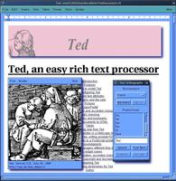
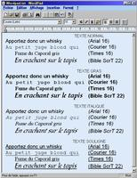
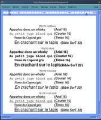
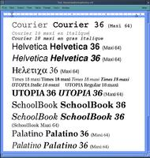
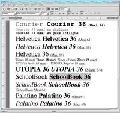
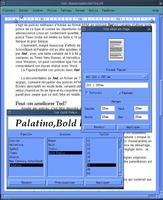
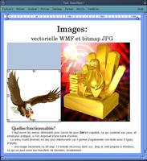
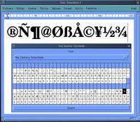
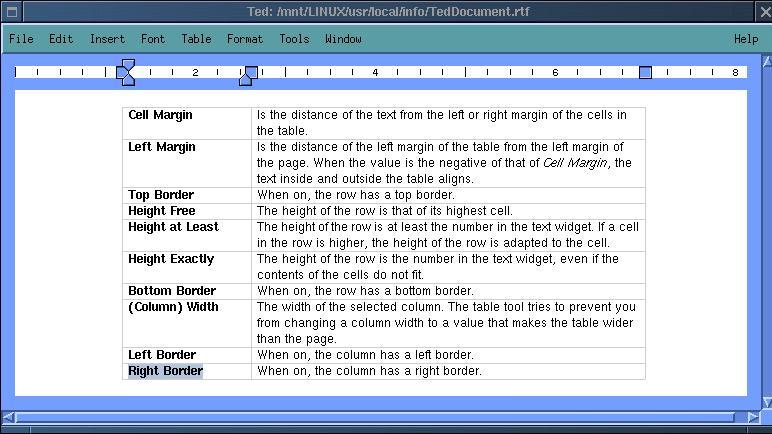

![[Top bar]](ted.files/Topbar-ru.gif)
| Эта заметка доступна
на: English
Castellano
Deutsch
Francais
Nederlands
Russian
Turkce
|
![[Bild des Autors]](ted.files/Andre-Pascual.jpg)
автор Andre Pascual
Об авторе :
Раньше он был промышленным дизайнером, сейчас преподаватель
компьютерного дизайна. Основные увлечения - компьютерная наука и 3D
графика.
Содержание:
- Что
такое Ted?
- Сравнение
- Какие
шрифты?
- Как
усовершенствовать TED?
- Функциональность
- Выводы
- Страница
отзывов
|
TED
Резюме:
Одно из главных препятствий перехода от Windows к Linux -
несовершенство переноса данных между платформами. Если в области графических
изображений это не проблема, то что касается документов и данных Microsoft
Office это так.
Кто - нибудь обязательно возразит, что StarOffice 5.2 прекрасно
взаимодействует с файлами Word и Excel, да это так, но всегда ли есть
необходимость запускать такое мощное приложение для того, чтобы просмотреть или
изменить простой файл Word или WordPad.
Как раз для этого и создан TED.
Что такое Ted?
Это в первую очередь Wysiwyg текстовый редактор созданный Mark de Does [email protected]. Интерфейс
построен на Motif, несколько пиктограмм и шрифтов, но на что сразу обращаешь
внимание - редактор похож на инструмент для повседневного использования.
|
Изображение 0: Простой TED Gui составленный
из компонентов
TED с помощью The Gimp. 
|
Загрузить TED можно здесь - <ftp://ftp.nluuq.nl/pub/editors/ted>
или <http://www.de-does.demon.nl>
или <http://www.nllgg.nl/Ted/>. Как
обычно распространяется в виде binary дистрибутива или в исходных текстах. Самая
новая версия составляет в объеме 1,9 MB (ted-2.8.src.tar.gz) и для компиляции
требует Motif. Из своего опыта могу сказать, что Lesstif.0.88-9 также подходит.
Результатом компиляции и striping (команда strip) является двоичный исполняемый
файл размером 1 MB. Ted содержит также орфографический словарь (
американский английский ), если вам необходим другой - можно скачать отдельно. В
дополнение к распространяемым binary/source-tar архивам существует также RPM
package.
Ted открывает файлы только одного формата ( но сохраняет в 3-х
) : RTF ( Rich Text Format ) - независимый от платформы и понятный любому
текстовому редактору, его свойства - размер и тип шрифта, расположение
определяется самим форматом. Чтобы избежать проблем переноса документов в Linux
- сохраняйте их в формате RTF вместо DOC формата Word.
Сравнение
Создадим идентичные ( теоретически ) файлы - два в редакторе WordPad в
формате RTF и DOC и один в формате RTF в редакторе PressWork 2 от GTS.
Изображение 1. Кликните на изображении для детального
просмотра.

Теперь попробуем открыть эти файлы разными приложениями : StarOffice,
WordPerfect8, Maxwell, Abiword и Ted :
-StarOffice открыл файлы и заменил шрифт BibleScript на Helmet. Вид
документов сохранился.
-WordPerfect и RTF формат : Arial был заменен на
Univers, Courier на Courier 10cp, Times и BibleScript на CG Times. Вид
документов ( кроме размера шрифта Courier ) сохранился. Файл в формате DOC
открылся более успешно.
-Maxwell (версия 0.53) открыл ( причем плохо )
только Linux RTF файлы. Несмотря на то, что предусмотрена возможность открытия
файлов в формате DOC - ничего не получилось.
-Abiword (версия 0.75 beta)
достаточно корректно открыл и RTF и DOC.
-Ted прекрасно открыл
Windows - RTF файл заменив BibleScript на Helvetica и любой RTF - файл созданный
перечисленными выше Linux приложениями.
Изображение 2. Ted и WordPad - файл - похоже, что задача
решена успешно. Кликните на изображении для детального просмотра.

Какие шрифты?
После инсталляции Ted содержит 4 шрифта : Times, Helvetica, Courier и
Symbol. Эти шрифты от Adobe в формате AFM. В принципе Ted может
использовать любой шрифт этого формата. В ОС Linux шрифты расположены в
/usr/share/enscript и /usr/share/ghostscript - использование их весьма
соблазнительно потому, что поставляемый с редактором Ted шрифт Times
ограничен размером 18 также как и шрифты Courier italic и Courier bold-italic.
К сожалению я смог импортировать только шрифты Utopia, New Century SchoolBook
и Palatino в /usr/local/afm и использовать их с Ted. Я попробовал
различные размеры от 8 до 64 и результаты были положительными. Выбор конечно не
богат, но принимая во внимание, что эти шрифты схожи с Times New Roman, а
Helvetica с Arial - в нашем распоряжении находятся наиболее важные и часто
используемые. Следовательно, например мы можем редактировать документы Word,
ведь эти шрифты также наиболее часто используемые под Windows.
Изображение 3. Шрифты в Ted. Кликните на изображении для
детального просмотра.

Позже появился интерес сохранить вид шрифтов в формате RTF и посмотреть как
другие приложения обработают этот документ. Ниже, на изображении, вид AbiWord и
нашего документа. В сравнении с Ted - изображение выше,
впечатляет.
Изображение 4.

В поставку Ted входит файл TeDocument.rtf ( 712 KB ), в котором
рассказывается где можно взять шрифты в формате AFM и как установить их. Каждый
файл шрифта является его описанием в текстовом формате. Перед использованием их,
необходимо удалить символы окончания строки и файла ( Strg-Z ). Инструкции
звучат намного проще, чем реальные действия.
Как усовершенствовать TED?
Одно из главных усовершенствований редактора - добавление шрифтов.
Внешний вид редактора Ted довольно прост, поэтому возникает
желание улучшить и его. Портировать в Qt или GTK - непростая задача.
Тем не
менее кое - какие изменения можно внести без изменения кода. Во время
инсталляции Ted копирует файл Ted.ad.sample в /usr/local/info -
это файл ресурсов редактора. Можно скопировать его в свой домашний каталог и
переименовать в Ted.
С помощью этого файла можно установить используемый шрифт, размер листов
бумаги, поля, словарь, пункты меню и т.д...
Файл Ted.ad.sample поставляется на английском языке, но я перевел его на
французский и сделал доступным для всех. Было бы неплохо если бы вы перевели его
также на другие языки.
Изображение 5. Кликните на изображении для детального
просмотра.

Функциональность
Чтобы получить представление о возможностях редактора надо просто просмотреть
выпадающие меню. Наиболее интересный пункт - Insert. Рассмотрим его :
- picture - вставить графическое изображение ( Ted
поддерживает 13 форматов ), среди которых присутствуют используемые в Windows -
ico, .bmp, .wmf. Размер изображения можно изменить с помощью 8-ми точек
расположенных по границам и появляющихся при двойном клике на изображении.
Изображение 6, графические объекты в TED. Кликните на
изображении для детального просмотра.

Можно конечно изменить размеры изображения, но рекомендуется не делать этого
из соображений потери качества.
- symbol - выбрать и вставить специальный символ из таблицы символов.
Просто выбираем символ, нажимаем insert и он оказывается в документе в позиции
курсора.
Изображение 7, symbols. Кликните на изображении для детального
просмотра.

- hyperlink - вставить гиперссылку.
- bookmark - добавить
закладку.
- file: вставить RTF файл
- table: создать
таблицу.
В пункте меню Format содержатся команды для форматирования текста :
расположение ( слева, справа, по центру ), добавление пустой строки до и после
параграфа, создание набора правил о формате данного параграфа ( Copy rules ) и
применение их для других (Paste rule).
Следующий пункт меню - Tools :
-Font Tool: выбрать шрифт, размер шрифта, просмотреть изменения перед
их применением.
-Find поиск и замена текста.
-Spelling:
орфографический словарь, использующий файл /usr/local/ind/Lang.ind. Существуют
словари почти для всех Европейских языков. Словарь для использования по
умолчанию указан в файле ресурсов, но данный пункт меню позволяет выбрать любой
из установленных.
- Page Setup выбор размера листа бумаги и
полей.
- Insert Symbol вставить специальный символ.
- Table
Tool создать таблицу и вставить ее в документ.
Изображение 8, таблица в Ted. Кликните на изображении для
детального просмотра.

Также Ted обладает следующими функциями : Mail,
Hyperlinks и Bookmark. Последние две интересны для сохранения
файла в формате HTML, для чего необходимо выбрать пункт меню Save to из
File. Можно сохранить файл в форматах .txt и .html несмотря на то, что
Ted открывает файлы только в формате RTF.
Когда файл сохраняется в формате html сохраняются также и изображения в
каталоге с расширением .img. Например изображения, относящиеся к файлу toto.html
находятся в каталоге toto.img.
Есть ли еще какие - нибудь дополнительные возможности у редактора
Ted? Конечно есть, но я советую вам самостоятельно попробовать их
: отправить почту непосредственно из редактора, перенести информацию между
данным приложением и другими X11 приложениями...
Выводы
Несмотря на небольшой размер, Ted достаточно производительное
приложение, удобное в использовании и стабильное ( я тестировал версии 2.5 и 2.8
). В версии 2.5 была обнаружена ошибка - удаление пустых строк клавишей del
влекло за собой завершение работы приложения, но в версии 2.8 ошибка была
устранена.
Хотелось бы чтобы в приложение были добавлены следующие
возможности : автосохранение, выпавнивание одновременно по левой и правой
границе, обтекание изображения текстом.
Также было бы неплохо конвертировать
Ted в GTK и QT (GTed и KTed).
Но даже в настоящее время
Ted является прекрасным приложением, с помощью которого можно
решать реальные задачи. Эта заметка, как и предыдущие написанные мной, созданы с
помощью Ted и ни один издатель не испытывал проблем с
преобразованием этих файлов. Это говорит о многом.
Страница отзывов
У каждой заметки есть страница отзывов. На этой
странице вы можете оставить свой комментарий или просмотреть комментарии других
читателей.
Webpages
maintained by the LinuxFocus Editor team
©
Andre Pascual, FDL
LinuxFocus.org
Click here to report a fault or send a comment to
Linuxfocus
|
Translation
information:
|
2000-11-06, generated by lfparser version
2.1
{kind=link}